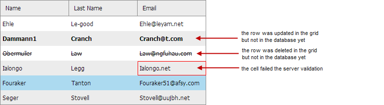

To provide updating data on the server we recommend you to use the DataProcessor library.
It's very easy to use dataProcessor. All you need to do is to initialize it and attach to the grid.
//the consructor takes the path to the server-side script as a parameter
var dp = new dataProcessor("data/connector.php");
dp.init(mygrid);
Once the dhtmlxDataProcessor's object is initialized and attached to the grid, all the changes made in the grid are automatically saved to the DB. Each time the user adds/edits/deletes records in the grid, the appropriate records are added/edited/deleted on the server.
dataProcessor provides a special support for dhtmlxGrid for managing the process of updating data on the server side.

Main Features:
You can find the detailed information about dataProcessor and use it with dhtmlxGrid in the dataProcessor documentation.
You can also be interested in the tutorials that show using dataProcessor with dhtmlxGrid:
dhtmlxGrid can be used as a part of an HTML form, so that the grid's data could be sent to the server as a part of form submitting.
It can be used if you don't want to use the DataProcessor library.
Read more in the article Integration with HTML Form.
Related sample: Basic init of dataprocessor
Back to top